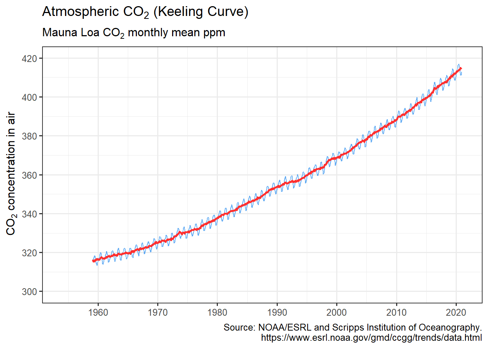
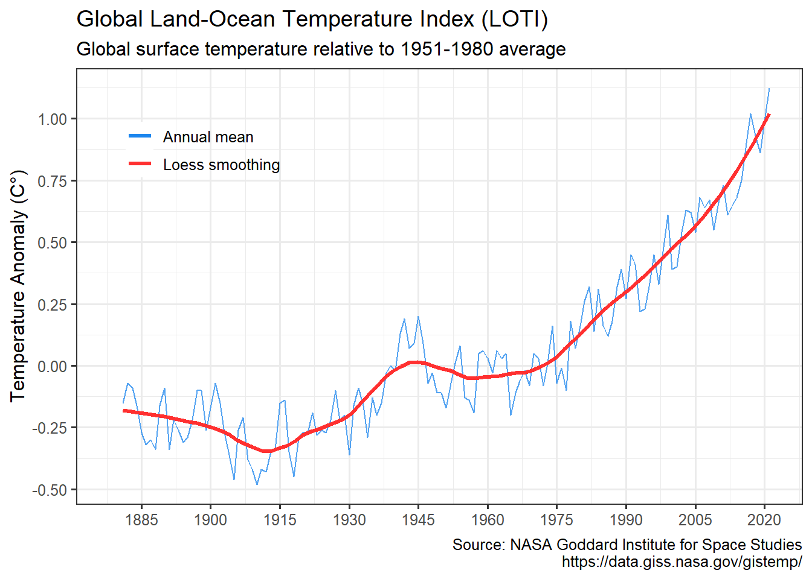
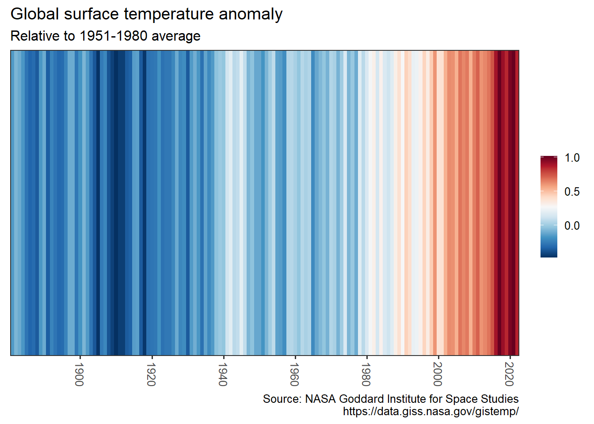
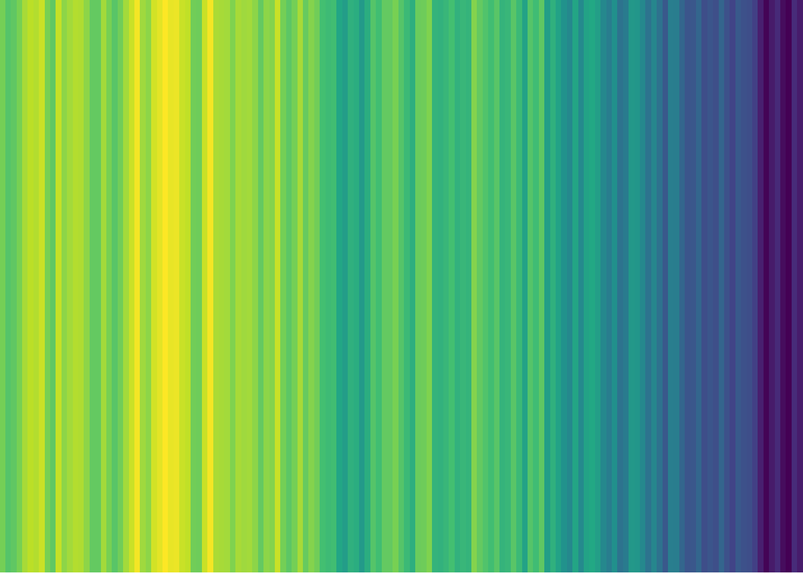
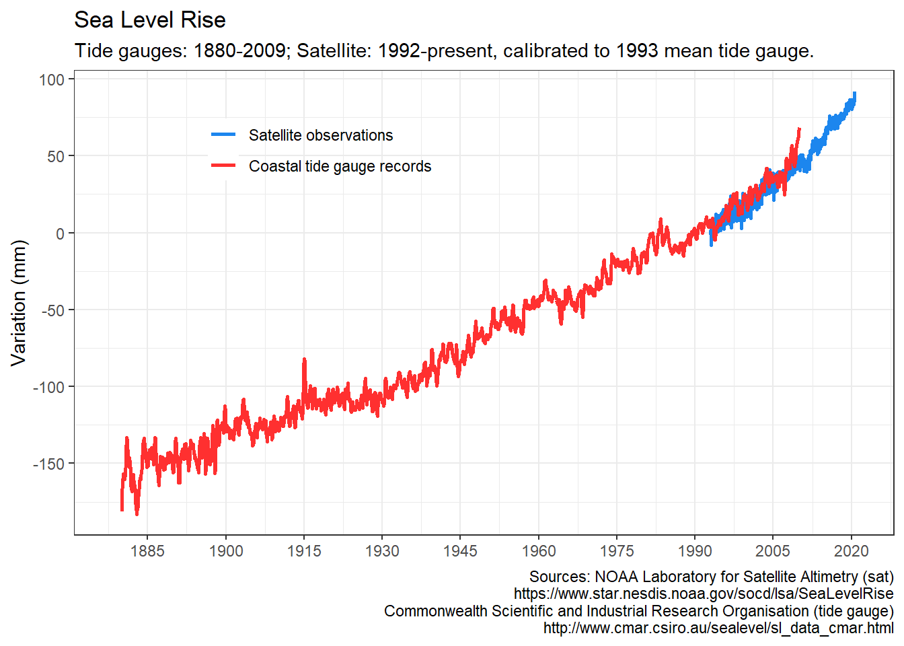
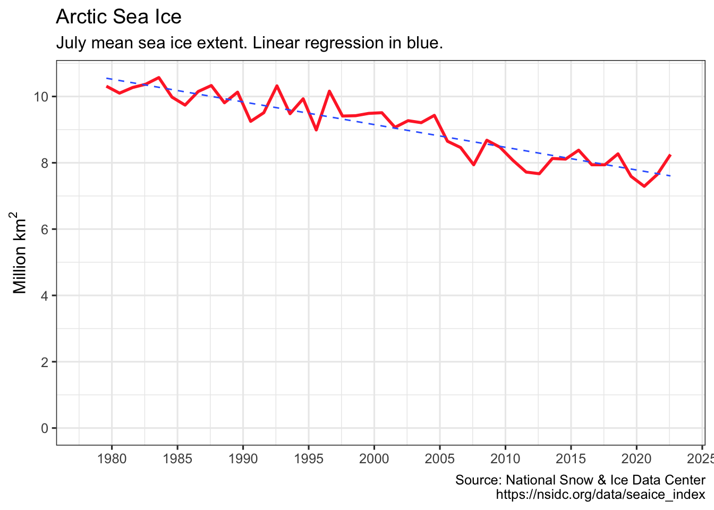
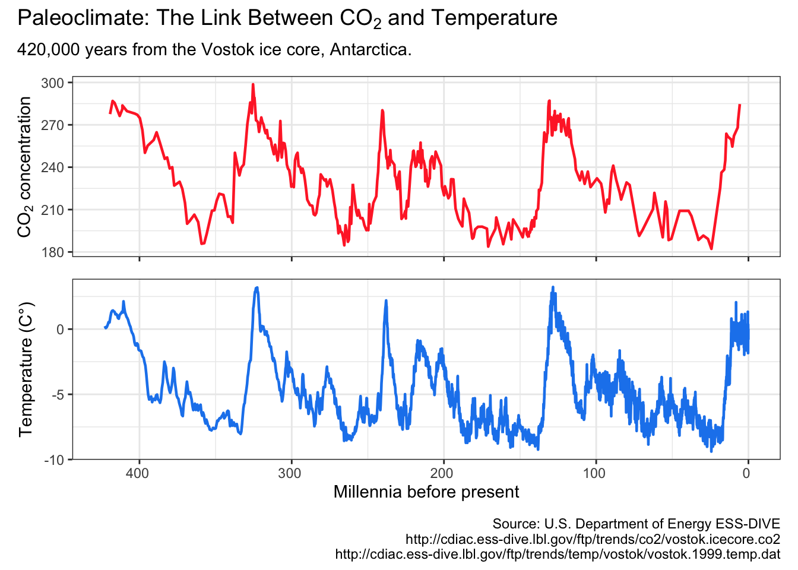

The goal of hockeystick is to make essential Climate Change datasets easily available to non-climate experts. hockeystick users can download the latest raw data from authoritative sources as well as view it via pre-defined ggplot2 charts. Datasets include atmospheric CO2, instrumental and ice-core temperature records, sea levels, and Arctic/Antarctic sea-ice. Additional visualizations using this data will be added over time.
The choice of data is based on Professor Stefan Rahmstorf’s presentation on The 5 Most Important Data Sets of Climate Science. I came across this on a post on the Open Mind blog. I wrote my own post on obtaining and visualizing this data (now out of date), which is the basis for this package.
Installation
You can install the development version of hockeystick from https://github.com/cortinah/hockeystick with:
remotes::install_github("cortinah/hockeystick")
Downloading and viewing climate change data
Retrieve NOAA/ESRL Mauna Loa CO2 Observatory concentration data and plot it:
library(hockeystick) ml_co2 <- get_carbon() plot_carbon(ml_co2)

Retrieve NASA/GISS global surface temperature anomaly data and plot it:

Visualize warming using Ed Hawkins styled “warming stripes”:

warming_stripes(stripe_only = TRUE, col_strip = viridisLite::viridis(11))

Retrieve tide gauge and satellite sea level data and plot it:
gmsl <- get_sealevel() plot_sealevel(gmsl)

Retrieve July annual Arctic Sea Ice Index and plot it:
seaice <- get_seaice() #> Please set use_cache=FALSE if you are changing pole, month, or measure from last cached data. plot_seaice(seaice)

get_seaice() arguments can be modified to download Antarctic sea ice, and allow any month.
Retrieve Vostok ice core data and plot it:
vostok <- get_paleo() plot_paleo(vostok)

Acknowledgments
- Carbon Dioxide data: Dr. Pieter Tans, NOAA/GML (www.esrl.noaa.gov/gmd/ccgg/trends/) and Dr. Ralph Keeling, Scripps Institution of Oceanography (www.scrippsco2.ucsd.edu/).
- Global temperature anomaly: GISS Surface Temperature Analysis (GISTEMP), version 4. GISTEMP Team, 2020: NASA Goddard Institute for Space Studies. https://data.giss.nasa.gov/gistemp/
- Warming Stripes design from Ed Hawkins’ Climate Lab. https://www.climate-lab-book.ac.uk/2018/warming-stripes/. In addition grateful to Dr. Dominic Royé for posting his approach to plotting them using ggplot2, which
warming_stripes()is based on. https://dominicroye.github.io/en/2018/how-to-create-warming-stripes-in-r/ - Sea level data: NOAA Laboratory for Satellite Altimetry (sat) https://www.star.nesdis.noaa.gov/socd/lsa/SeaLevelRise. Commonwealth Scientific and Industrial Research Organisation (tide gauges) http://www.cmar.csiro.au/sealevel/sl_data_cmar.html
- Sea Ice Index: National Snow & Ice Data Center. https://nsidc.org/. Data Archive: https://nsidc.org/data/seaice_index/archives
- Vostok carbon dioxide and temperature data: https://cdiac.ess-dive.lbl.gov/trends/co2/vostok.html
- Caching data sets: ROpenSci guide to Persistent config and data for R packages and the getlandsat package.
Notes and Resources
- While all data is compiled from reliable sources, I am not a climate scientist. I am building
hockeystickbecause of my interest in tracking climate data and making it easily available to the community. - Here are some online resources I have found very helpful to learn more about climate science:
- MIT edX Global Warming Science. https://www.edx.org/course/global-warming-science
- SDG Academy: Climate Change: The Science and Global Impact. https://sdgacademy.org/course/climate-change-the-science-and-global-impact/